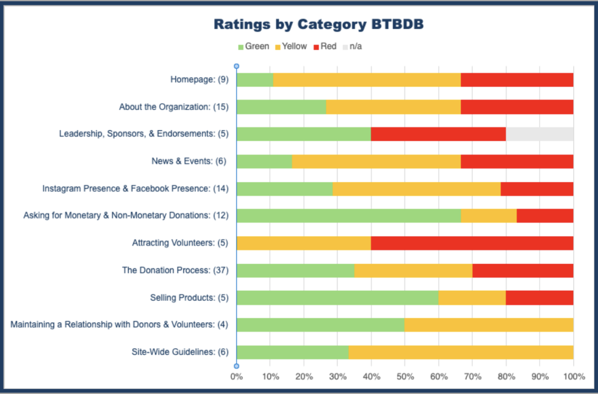
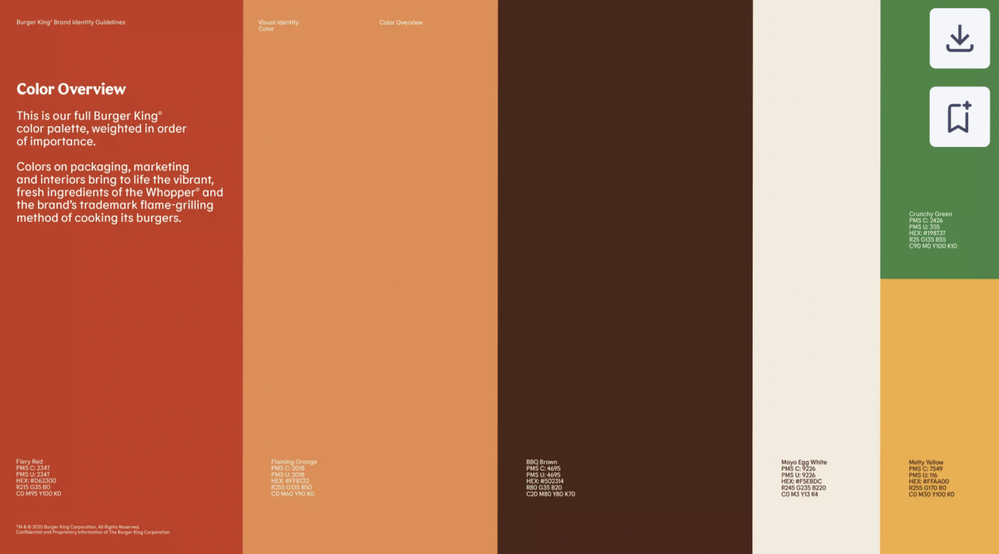

AI & Learning (Interaction–Outcome Paradox)
Do ChatGPT and search help students learn differently?
Hey! My name is
Thanks for stopping by!
From Brazil to Boston, I am passionate about where sales, consulting, and strategy meet UX and psychology. I focus on real challenges with empathy and creativity. Building skills that resonate across cultures and industries.
Explore my workShort summaries of my academic projects – enough to get the picture quickly. Full case studies are one click away if you want to go deeper.
Do ChatGPT and search help students learn differently?

118-criteria UX evaluation. Clear wins and next steps for donors and volunteers.

A multi-part campaign combining visual storytelling, strategy, and mobile planning for sustainability action.

Responsive web + Oak Hill Pizza flows. The foundation for this portfolio.